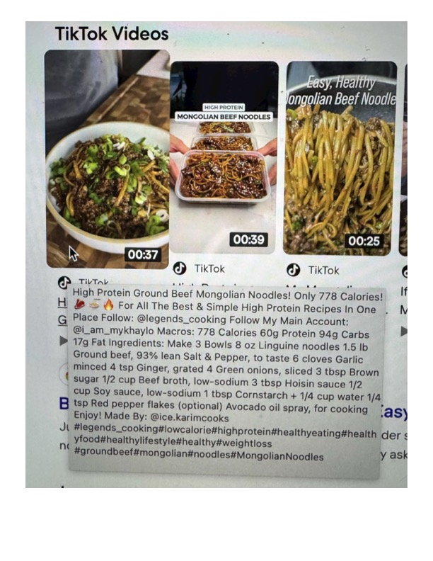

TikTok Videos

Original cookbook page 801
Ingredients
- 4 minced 4 tsp Ginger, grated 4 Green onions, sliced
- 4 sugar 1/2 cup Beef broth, low-sodium 3 tbsp Hoisin
Instructions
- Hi & = & For All The Best & Simple High Protein Recipes In One G Place Follow: @legends_cooking Follow My Main Account: ~ | @i_am_mykhaylo Macros: 778 Calories 60g Protein 94g Carbs le » 17g Fat Ingredients: Make 3 Bowls 8 oz Linguine noodles 1.5 Ib _ Ground beef, 93% lean Salt & Pepper, to taste 6 cloves Garlic / minced 4 tsp Ginger, grated 4 Green onions, sliced 3 tbsp Brown | \* sugar 1/2 cup Beef broth, low-sodium 3 tbsp Hoisin sauce 1/2 cup Soy sauce, low-sodium 1 tbsp Cornstarch + 1/4 cup water 1/4.
- B tsp Red pepper flakes (optional) Avocado oil spray, for cooking 'as) _ Enjoy!
- Made By: @ice.karimcooks ' Jt #legends_cooking#lowcalorie#highprotein#healthyeating#health ders i yfood#healthylifestyle#healthy#weightloss #groundbeef#mongolian#noodles#MongolianNoodles
Recipe #801 from collection